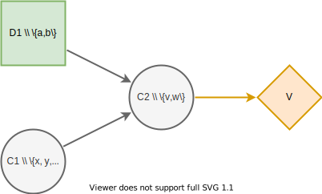

Usage
On this page, we demonstrate common patterns for expressing influence diagrams and creating decision models using DecisionProgramming.jl. We also discuss the abstraction that is created using the influence diagram structure. We can import the package with the using keyword.
using DecisionProgrammingAdding nodes

Given the above influence diagram, we express it as a Decision Programming model as follows. We create ChanceNode and DecisionNode instances and add them to the influence diagram. Creating a ChanceNode or DecisionNode requires giving it a unique name, its information set and its states. If the node is a root node, the information set is left empty using square brackets. The order in which nodes are added does not matter.
diagram = InfluenceDiagram()
add_node!(diagram, DecisionNode("D1", [], ["a", "b"]))
add_node!(diagram, ChanceNode("C2", ["D1", "C1"], ["v", "w"]))
add_node!(diagram, ChanceNode("C1", [], ["x", "y", "z"]))Value nodes are added by simply giving it a name and its information set. Value nodes do not have states because their purpose is to map their information state to utility values.
add_node!(diagram, ValueNode("V", ["C2"]))Once all the nodes are added, we generate the arcs. This orders the nodes and gives each one a number, so that their predecessors have numbers less than theirs. In effect, the chance and decision nodes are numbered such that $C \cup D = \{1,...,n\}$, where $n = \mid C\mid + \mid D\mid$. The value nodes are numbered $V = \{n+1,..., N\}$, where $N = \mid C\mid + \mid D\mid + \mid V \mid$. For more details on influence diagrams see page influence diagram.
generate_arcs!(diagram)Now the fields Names, I_j, States, S, C, D and V in the influence diagram structure have been properly filled. The Names field holds the names of all nodes in the order of their numbers. From this we can see that node D1 has been numbered 1, node C1 has been numbered 2 and node C2 has been numbered 3. Field I_j holds the information sets of each node. Notice, that the nodes are identified by their numbers. Field States holds the names of the states of each node and field S holds the number of states each node has. Fields C, D and V contain the chance, decision and value nodes respectively.
julia> diagram.Names
4-element Array{String,1}:
"D1"
"C1"
"C2"
"V"
julia> diagram.I_j
4-element Array{Array{Int16,1},1}:
[]
[]
[1, 2]
[3]
julia> diagram.States
3-element Array{Array{String,1},1}:
["a", "b"]
["x", "y", "z"]
["v", "w"]
julia> diagram.S
3-element States:
2
3
2
julia> diagram.C
2-element Array{Int16,1}:
2
3
julia> diagram.D
1-element Array{Int16,1}:
1
julia> diagram.V
1-element Array{Int16,1}:
4Probability Matrices
Each chance node needs a probability matrix which describes the probability distribution over its states given an information state. It holds probability values $ℙ(X_j=s_j∣X_{I(j)}=𝐬_{I(j)})$
for all $s_j \in S_j$ and $𝐬_{I(j)} \in 𝐒_{I(j)}$.
Thus, the probability matrix of a chance node needs to have dimensions that correspond to the number of states of the nodes in its information set and number of state of the node itself.
For example, the node C1 in the influence diagram above has an empty information set and three states $x, y$, and $z$. Therefore its probability matrix needs dimensions (3,1). If the probabilities of events $x, y$, and $z$ occuring are $10\%, 30\%$ and $60\%$, then the probability matrix $X_{C1}$ should be $[0.1 \quad 0.3 \quad 0.6]$. The order of the probability values is determined by the order in which the states are given when the node is added. The states are also stored in this order in the States vector.
In Decision Programming the probability matrix of node C1 can be added in the following way. Note, that probability matrices can only be added after the arcs have been generated.
# How C1 was added: add_node!(diagram, ChanceNode("C1", [], ["x", "y", "z"]))
X_C1 = [0.1, 0.3, 0.6]
add_probabilities!(diagram, "C1", X_C1)The add_probabilities! function adds the probability matrix as a Probabilities structure into the influence diagram's X field.
julia> diagram.X
1-element Array{Probabilities,1}:
[0.1, 0.3, 0.6]As another example, we will add the probability matrix of node C2. It has two nodes in its information set: C1 and D1. These nodes have 3 and 2 state respectively. Node C2 itself has 2 states. The question is should the dimensions of the probability matrix be $(|S_{C1}|, |\ S_{D1}|, |\ S_{C2}|) = (3, 2, 2)$ or $(|S_{D1}|, |\ S_{C1}|, \ |S_{C2}|) = (2, 3, 2)$? The answer is that the dimensions should be in ascending order of the nodes' numbers that they correspond to. This is also the order that the information set is in in the field I_j. In this case the influence diagram looks like this:
julia> diagram.Names
4-element Array{String,1}:
"D1"
"C1"
"C2"
"V"
julia> diagram.I_j
4-element Array{Array{Int16,1},1}:
[]
[]
[1, 2]
[3]
julia> diagram.S
3-element States:
2
3
2Therefore, the probability matrix of node C2 should have dimensions $(|S_{D1}|, |\ S_{C1}|, \ |S_{C2}|) = (2, 3, 2)$. The probability matrix can be added by declaring the matrix and then filling in the probability values as shown below.
X_C2 = zeros(2, 3, 2)
X_C2[1, 1, 1] = ...
X_C2[1, 1, 2] = ...
X_C2[1, 1, 2] = ...
⋮
add_probabilities!(diagram, "C2", X_C2)In order to be able to fill in the probability values, it is crucial to understand what the matrix indices represent. The indices represent a subpath in the influence diagram. The states in the path are referred to with their numbers instead of with their names. The states of a node are numbered according to their positions in the vector of states in field States. The order of the states of each node is seen below. From this, we can deduce that for nodes D1, C1, C2 the subpath (1,1,1) corresponds to subpath $(a, x, v)$ and subpath (1, 3, 2) corresponds to subpath $(a, z, w)$. Therefore, the probability value at X_C2[1, 3, 2] should be the probability of the scenario $(a, z, w)$ occuring.
julia> diagram.States
3-element Array{Array{String,1},1}:
["a", "b"]
["x", "y", "z"]
["v", "w"]Helper Syntax
Figuring out the dimensions of a probability matrix and adding the probability values is difficult. Therefore, we have implemented an easier syntax.
A probability matrix can be initialised with the correct dimensions using the ProbabilityMatrix function. It initiliases the probability matrix with zeros.
julia> X_C2 = ProbabilityMatrix(diagram, "C2")
2×3×2 ProbabilityMatrix{3}:
[:, :, 1] =
0.0 0.0 0.0
0.0 0.0 0.0
[:, :, 2] =
0.0 0.0 0.0
0.0 0.0 0.0
julia> size(X_C2)
(2, 3, 2)A matrix of type ProbabilityMatrix can be filled using the names of the states. The states must however be given in the correct order, according to the order of the nodes in the information set vector I_j. Notice that if we use the Colon (:) to indicate several elements of the matrix, the probability values have to be given in the correct order of the states in States.
julia> X_C2["a", "z", "w"] = 0.25
0.25
julia> X_C2["z", "a", "v"] = 0.75
ERROR: DomainError with Node D1 does not have a state called z.:
julia> X_C2["a", "z", "v"] = 0.75
0.75
julia> X_C2["a", "x", :] = [0.3, 0.7]
2-element Array{Float64,1}:
0.3
0.7A matrix of type ProbabilityMatrix can also be filled using the matrix indices if that is more convient. The following achieves the same as what was done above.
julia> X_C2[1, 3, 2] = 0.25
0.25
julia> X_C2[1, 3, 1] = 0.75
0.75
julia> X_C2[1, 1, :] = [0.3, 0.7]
2-element Array{Float64,1}:
0.3
0.7Now, the probability matrix X_C2 is partially filled.
julia> X_C2
2×3×2 ProbabilityMatrix{3}:
[:, :, 1] =
0.3 0.0 0.75
0.0 0.0 0.0
[:, :, 2] =
0.7 0.0 0.25
0.0 0.0 0.0The probability matrix can be added to the influence diagram once it has been filled with probability values. The probability matrix of node C2 is added exactly like before, despite X_C2 now being a matrix of type ProbabilityMatrix.
julia> add_probabilities!(diagram, "C2", X_C2)Utility Matrices
Each value node maps its information states to utility values. In Decision Programming the utility values are passed to the influence diagram using utility matrices. Utility matrices are very similar to probability matrices of chance nodes. There are only two important differences. First, the utility matrices hold utility values instead of probabilities, meaning that they do not need to sum to one. Second, since value nodes do not have states, the cardinality of a utility matrix depends only on the number of states of the nodes in the information set.
As an example, the utility matrix of node V should have dimensions (2,1) because its information set consists of node C2, which has two states. If state $v$ of node C2 yields a utility of -100 and state $w$ yields utility of 400, then the utility matrix of node V can be added in the following way. Note, that utility matrices can only be added after the arcs have been generated.
julia> Y_V = zeros(2)
2-element Array{Float64,1}:
0.0
0.0
julia> Y_V[1] = -100
-100
julia> Y_V[2] = 400
400
julia> add_utilities!(diagram, "V", Y_V)The other option is to add the utility matrix using the UtilityMatrix type. This is very similar to the ProbabilityMatrix type. The UtilityMatrix function initialises the values to Inf. Using the UtilityMatrix type's functionalities, the utility matrix of node V could also be added like shown below. This achieves the exact same result as we did above with the more abstract syntax.
julia> Y_V = UtilityMatrix(diagram, "V")
2-element UtilityMatrix{1}:
Inf
Inf
julia> Y_V["w"] = 400
400
julia> Y_V["v"] = -100
-100
julia> add_utilities!(diagram, "V", Y_V)The add_utilities! function adds the utility matrix as a Utilities structure into the influence diagram's Y field.
julia> diagram.Y
1-element Array{Utilities,1}:
[-100.0, 400.0]Generating the influence diagram
The final part of modeling an influence diagram using the Decision Programming package is generating the full influence diagram. This is done using the generate_diagram! function.
generate_diagram!(diagram)In this function, first, the probability and utility matrices in fields X and Y are sorted according to the chance and value nodes' indices.
Second, the path probability and path utility types are declared and added into fields P and U respectively. These types define how the path probability $p(𝐬)$ and path utility $\mathcal{U}(𝐬)$ are defined in the model. By default, the function will set them to default path probability and default path utility. See the influence diagram for more information on default path probability and utility.